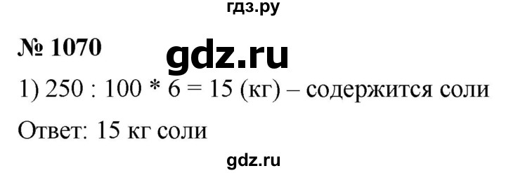
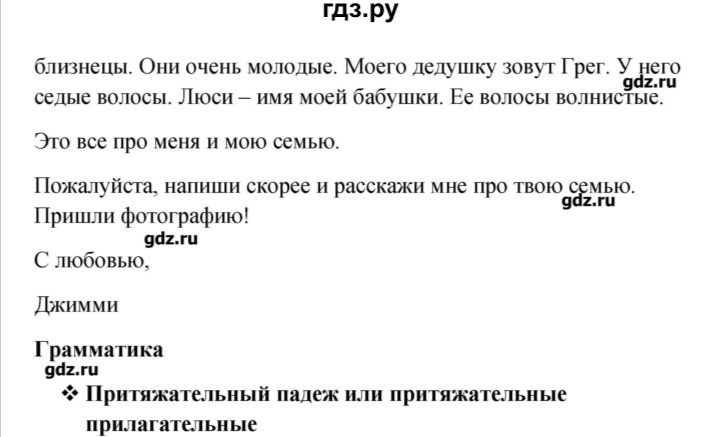
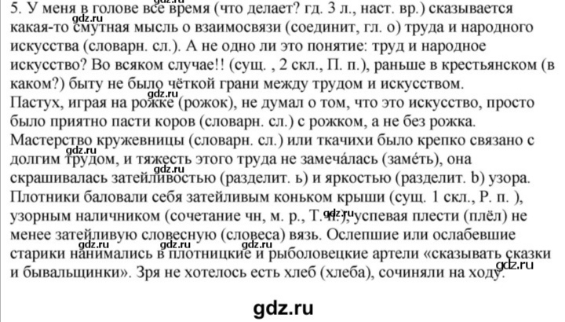
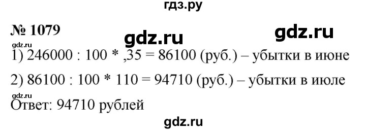
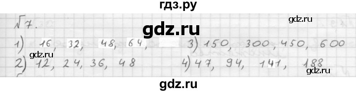

Домашние задания на 29 апреля
Математика
1070 1072 1076 1079 1082
Ответы





История
Пар. 46 (повторить), пар47. Вторая война с Карфагеном
Биология
Учебник стр.98-103 читать, ? устно. Записать определения к терминам ( мукор, пеницилл).РТ №6,7,8(стр.79). Посмотреть
https://interneturok.ru/lesson/biology/5-klass/tsarstvo-griby/shlyapochnye-griby и
https://interneturok.ru/lesson/biology/5-klass/tsarstvo-griby/plesnevye-griby-i-drozhzhi
Ответы
Мукор-род низших плесневых грибов класса зигомицетов
Пеницилл-плесневой гриб, образующийся на продуктах питания и вследствие этого портящий их.
№6 рабочая тетрадь
На рисунке изображен мукор, или белая плесень. основные части гриба — гифы (изображены переплетающимися нитями), спорангий (изображен шариком) и высыпающиеся из него споры.
№7 рабочая тетрадь
Плесневые грибы человек использует при изготовлении огромного количества продуктов питания, а также в фармацевтике, в целлюлозно-бумажном производстве, в животноводстве и растениеводстве.
№8 рабочая тетрадь
Дрожжи превращают сахар в спирт и углекислый газ, вызывают брожение, которое используется в хлебопечении, винделии, производстве спирта.